Passionate about 5G Network Optimization, IoT Innovations, and building modern Web Applications. Blending hardware expertise with software engineering to create impactful solutions.
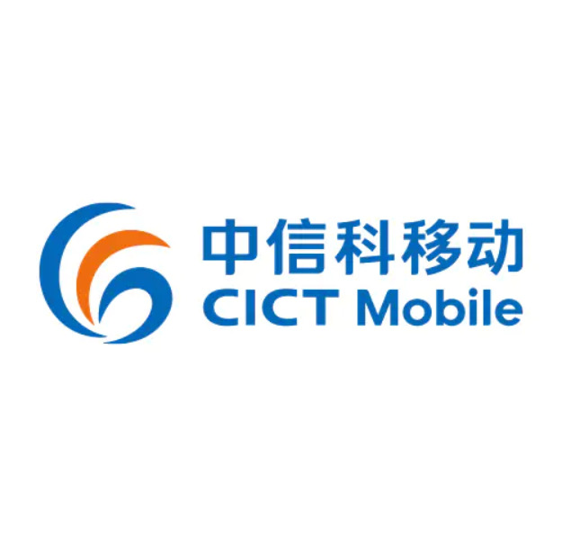
CICT Mobile is an international provider of ICT solutions and equipment. Actively involved in the deployment and optimization of the Surge "Internet Rakyat" 5G FWA project, aiming to deliver accessible high-speed broadband to communities.
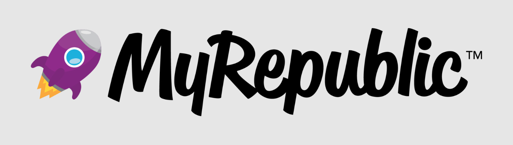
MyRepublic is a multinational internet service provider (ISP) known for ultra-fast fiber broadband services. Focused on Fiber-To-The-Home (FTTH) network expansion, infrastructure planning, and deployment quality assurance across Central Java.
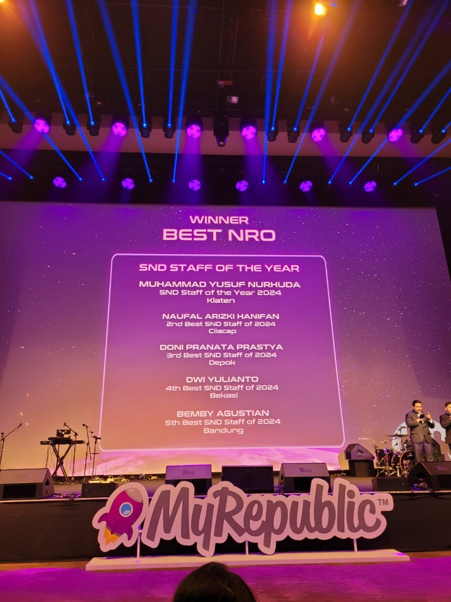
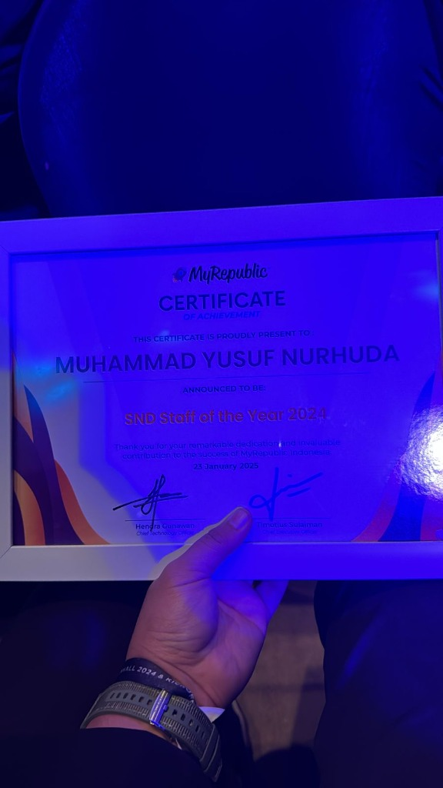
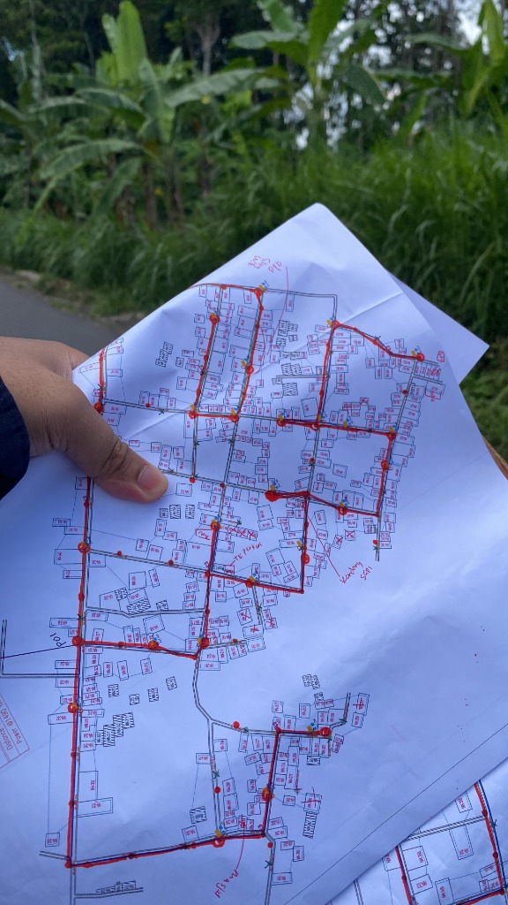
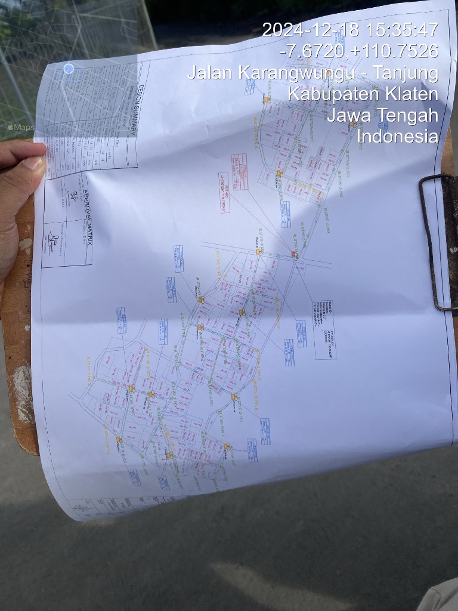
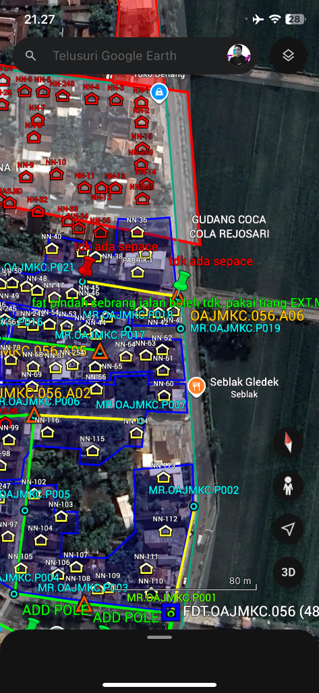
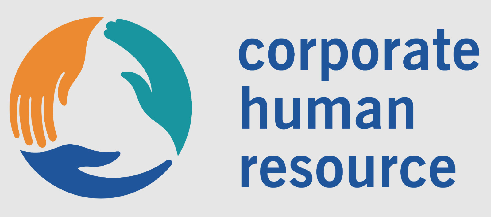
PT Indo Human Resource is a professional HR outsourcing and telecommunications service provider. Acted as a subcontractor for Ericsson and Nokia, handling major RF Optimization projects for prominent network operators including XL Axiata and Indosat Ooredoo Hutchison (IOH).
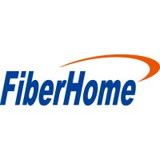
FiberHome Technologies is a leading global provider of telecommunication equipment, network solutions, and IT services, specializing in optical communications and wireless network infrastructure.
A web-based platform developed for CICT Mobile Communications to streamline the approval process for subcontractor and internal documents (L1 Approval), eliminating paper-based bottlenecks.
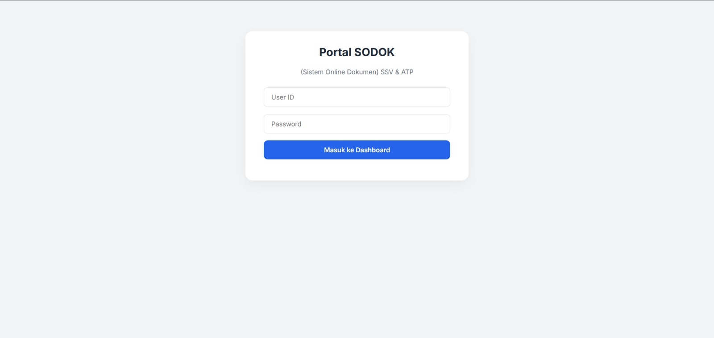
A centralized document management and knowledge-sharing platform built to facilitate resource accessibility and team collaboration at CICT Mobile Communications.
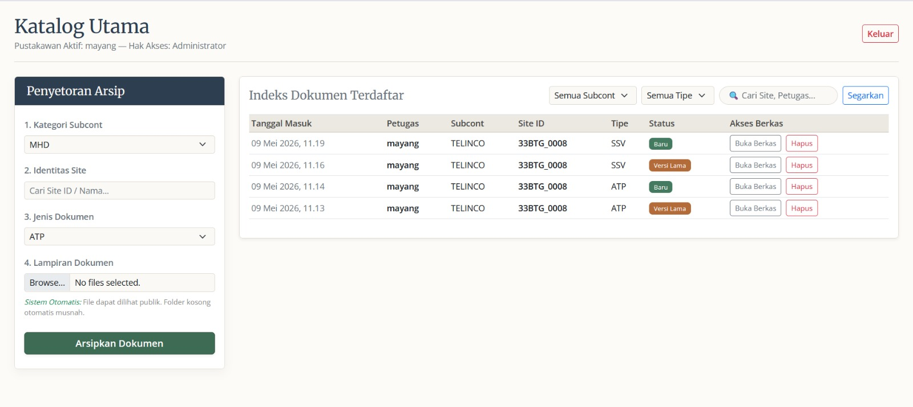
Developed an Intrusion Detection System using Python and Scikit-Learn to detect DoS and Port Scanning attacks. Includes an interactive Streamlit dashboard for real-time traffic analysis and classification.
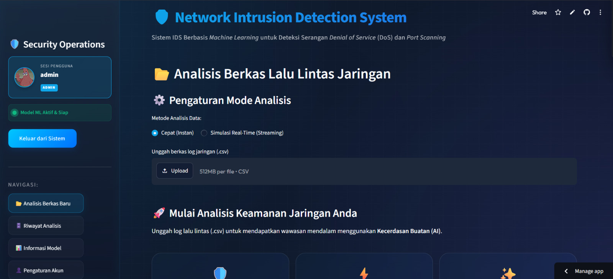
View AppCo-developed an IoT early warning system integrating sensors and wireless communication to monitor drought conditions. Awarded 2nd Place in KRENOVA 2019 by Central Java Government.
Read Article